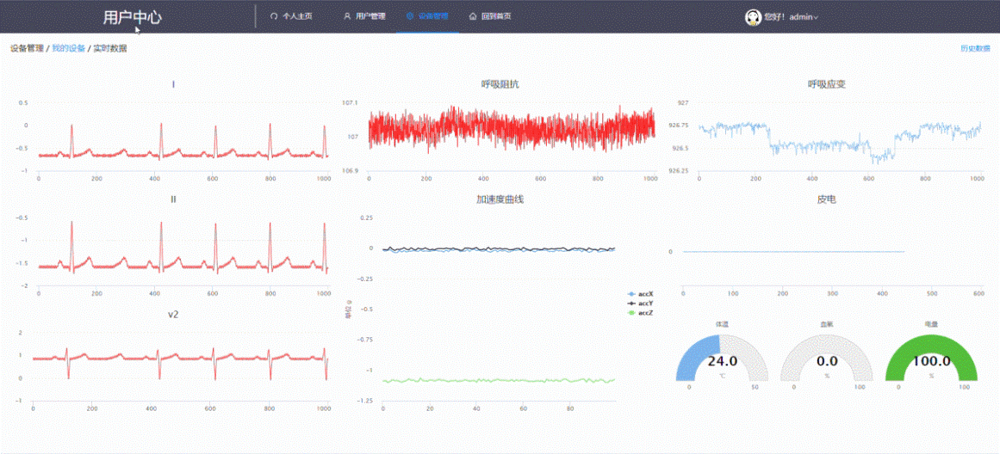
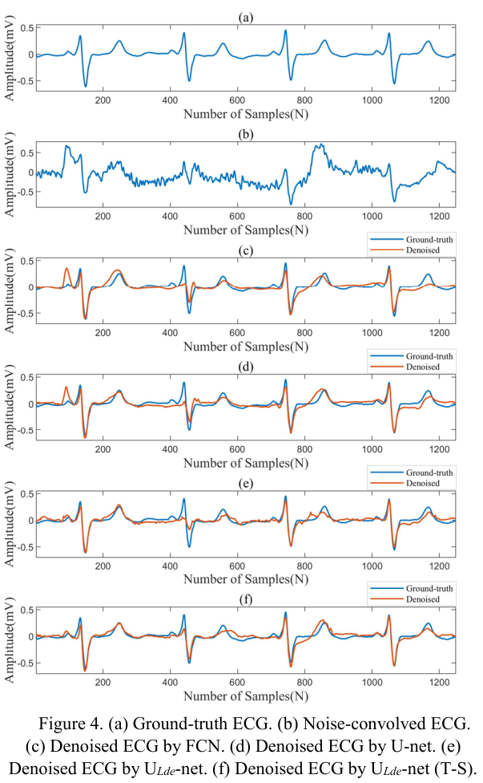
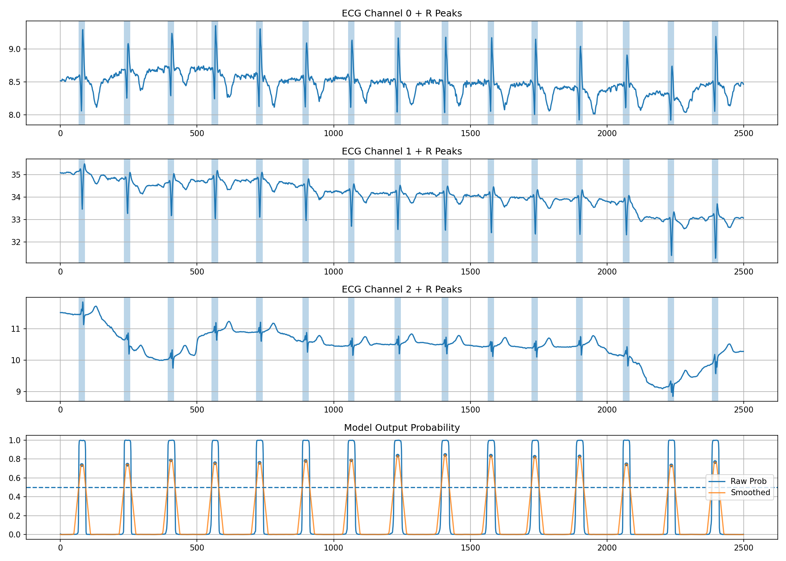
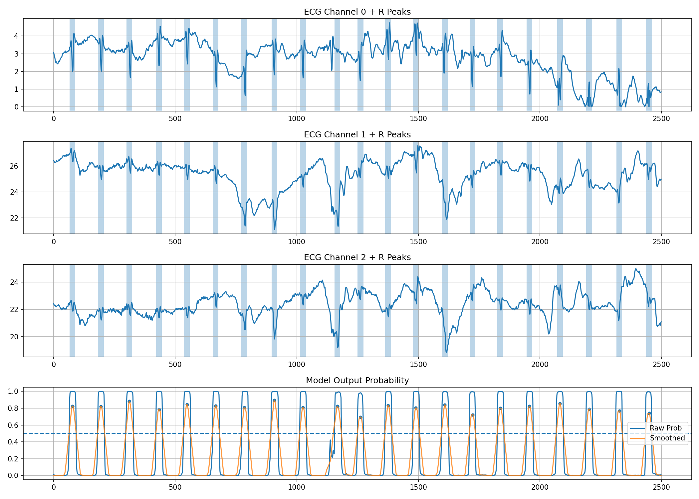
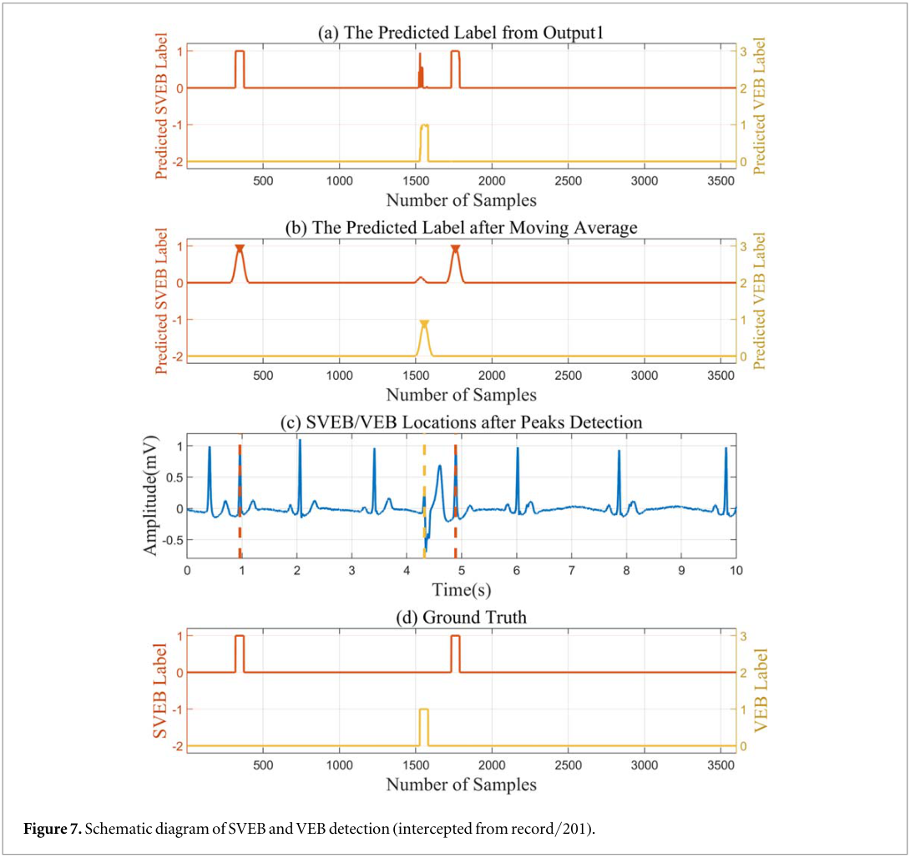
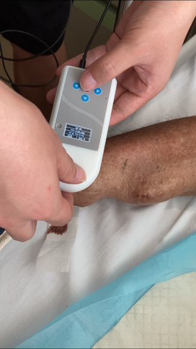
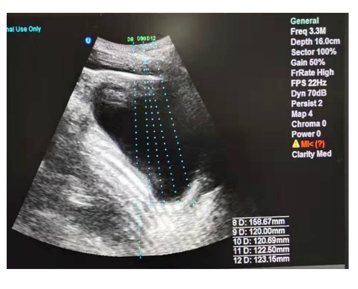
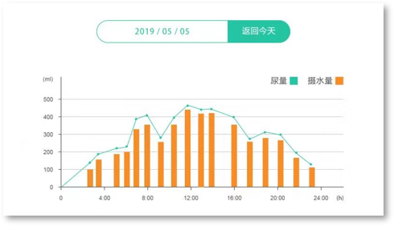

01
肝脏手术视频理解
使用 LLaMA Factory 微调面向肝脏手术的视觉语言模型，展示手术视频输入与交互式问答流程。
LLaMA Factory · VLM 微调 · 视频理解
使用 LLaMA Factory 微调面向肝脏手术的视觉语言模型，展示手术视频输入与交互式问答流程。
LLaMA Factory · VLM 微调 · 视频理解
提取手术视频中的血液区域，探索出血事件的时序分析与源点连续追踪。以下为场景验证片段。
语义分割 · 时序分析 · Track-On
在手术视频中分割双极器械，并展示器械运动过程中的掩膜追踪结果。
SAM 2 · 视频分割
结合手术画面与时间轴查看超声刀相关动作片段，展示视频内容与分析结果的对应关系。
手术视频分析 · 动作时间轴
对比原始手术画面与单目深度估计结果，展示器械和组织的相对深度变化。
Depth Anything 3 · 单目深度估计
在 Jetson Orin NX 上部署手术视觉模型，结合视频采集卡，打通实时采集、推理与结果展示流程。
ONNX · TensorRT FP16 · GStreamer
完成手术视觉模型的 CoreML 转换与 iPad 集成，展示器械检测、体腔内外识别和出血分割的端侧运行。
PyTorch · TorchScript · CoreML
采用基于 TotalSegmentator 的优化模型版本进行器官分割，在 3D Slicer 中展示 CT 多平面切片与三维分割结果。
TotalSegmentator 优化模型 · 3D Slicer
基于条件扩散模型生成合成 CT，展示合成 CT 与计划 CT 的三维重建结果。
条件扩散模型 · 医学影像生成
集成细胞检测与病理图像分析模型，支持批量推理、医生复核及结构化报告生成。
D-FINE / YOLO · FastAPI · Vue 3 · Electron
展示静态心电分析中的波形缩放与测量交互，便于查看波形细节和分析参数。
心电信号处理 · 波形可视化
通过 Web 界面查看多导联心电及其他生理信号，展示实时监测数据的集中可视化。
Web · 实时心电 · 多参数监测

展示长程动态心电的波形分析、报告汇总与心率变异性分析结果。
动态心电 · 分析报告 · HRV
结合轻量化 U-Net 与知识蒸馏进行心电降噪。图中对比参考波形、含噪波形，以及不同模型的降噪结果。
U-Net · 知识蒸馏 · ECG 降噪

展示多通道心电的 QRS / R 峰定位结果，以及模型输出概率和平滑后的检测曲线。
心电信号处理 · R 峰定位


基于改进 U-Net 检测室上性早搏（SVEB）与室性早搏（VEB）。图中展示模型输出、平滑处理、早搏位置及参考标注。
改进 U-Net · SVEB / VEB 检测

展示动静脉内瘘狭窄程度检测系统的设备与现场采集过程。
内瘘监测 · 信号采集

展示贴片式超声膀胱容量检测项目中的超声测量图像，以及尿量与饮水量的记录界面。
超声测量 · 膀胱容量监测

